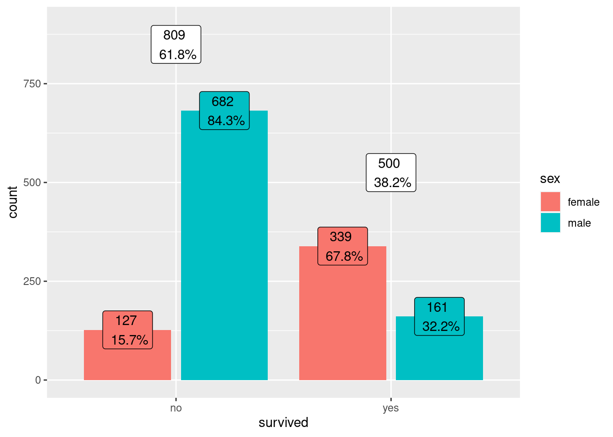
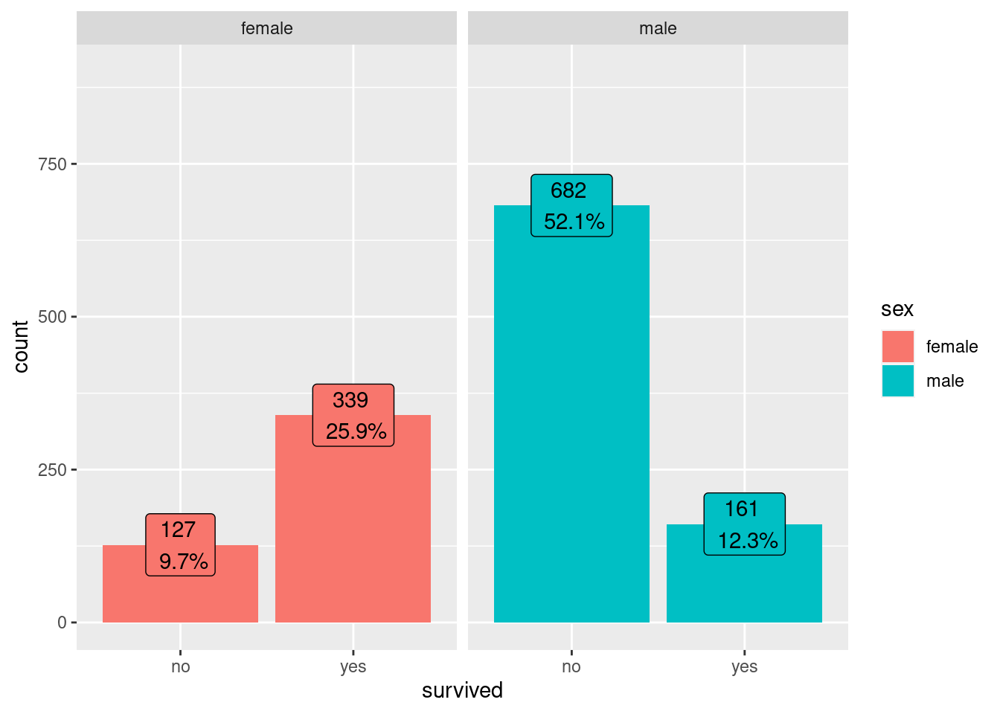

Mostrar código-fonte
library(tidyverse)
library(janitor)
library(nortest)
library(DataExplorer)
library(ggrepel)
library (plotly)
library(MASS)
library(rgl)
library(car)
library(nlme)
library(jtools)
library(questionr)library(tidyverse)
library(janitor)
library(nortest)
library(DataExplorer)
library(ggrepel)
library (plotly)
library(MASS)
library(rgl)
library(car)
library(nlme)
library(jtools)
library(questionr)Diferente do que vimos no artigo sobre Regressão Linear onde criamos um modelo de ML supervisionado para fazer inferências sobre um variável dependente contínua, neste artigo iremos criar modelos onde a variável dependente obedece à uma distribuição de Bernoulli. Neste caso, temos uma variável dependente dicotômica (0 ou 1), tendo a probabilidade de um evento ocorrer (p) e dele não ocorrer (1-p).
Para os próximos exemplos iremos utilizar a base de dados TitanicSurvival que possui informações sobre 1309 passageiros do navio Titanic. Usaremos a variável survived como variável dependente e as variáveis sexo, idade e classe como variáveis explicativas.
# Selecionar base TitanicSurvival
df <- TitanicSurvival |> as_tibble()
dfVeja que temos variaveis qualitativas tanto para a explicativa quanto para a variavel dependente. Devemos portanto, ou criar as variaveis dummies, conforme vimos no artigo de Regressao Linear, seja de forma manual ou saber exatamente como as funçoes lidam com tais cenarios.
Para nossos experimentos, iremos selecionar como variável dependente a survived que indica se a pessoa sobreviveu ou não à tragédia do navio Titanic. Ou seja, iremos criar modelo preditivo que, com base em variáveis explicativas presentes (sexo, idade e classe do passageiro) em nossa amostra de dados, tentarão prever se uma pessoa sobreviveria ou não.
Inicialmente, vejamos a tabela de frequência
#Frequencia absoluta e relativa:
as_tibble(table(df$survived),
.name_repair = "unique") |>
bind_cols(
enframe(prop.table(
table(df$survived)))
) |> dplyr::select(sobreviventes = name, freq_absoluta = n, freq_relativa=value) |>
mutate (freq_relativa = scales::percent(as.numeric(freq_relativa)))Aqui, apenas a tabela em forma gráfica. Vemos que apenas 38% das pessoas sobreviveram.
df <- TitanicSurvival
df |> ggplot(aes(survived, fill = survived)) +
geom_bar() +
geom_label(stat = "count",
aes(label=
paste(..count.., "\n",scales::percent(after_stat(count/sum(count))))),
show.legend = F,
position = position_nudge(y=-20))+
theme_minimal()
Diferente da regressão linear, onde a saída era um valor quantitativo definido pelas variáveis preditoras e respetivos parâmetros calculados para minimizar os erros do modelo, na regressão logística binomial, iremos calcular a probabilidade(p) do evento ocorrer ou não ocorrer com base no comportamente das variáveis preditoras. Ou seja, a variável dependente será categórica e dicotômica (zero ou um).
Se definirmos um vetor Z com as variáveis explicativas como:
Z_i = \alpha + \beta_1 * X_1 + \beta_2 * X_{2} + \beta_k * X_{k}
em que Z é conhecido como logito e não representa a variável dependente, mas sim equivale ao logaritmo natural (ln) da chance (odds).
Chance é um conceito estatístico definido pela razão do evento ocorrer e do evento não ocorrer:
chance (odds)_{Y_i=1} = \dfrac{p_i}{1 - p_i}
Já que nosso objetivo é calcular a probabilidade p do evento ocorrer, temos então:
p_i = \dfrac{1}{1 + \mathrm{e}^{-Z_i}}
E a probailidade do evento não ocorrer é:
1 - p_i = \dfrac{1}{1 + \mathrm{e}^{Z_i}}
Ao criarmos um gráfico de um conjunto de logitos aleatório, por exemplo de -5 à +5, temos uma curva conhecida como “curva S” ou “sigmóide”:
tibble(Z = seq(-5,5)) |>
mutate (p = 1/(1 + exp(1)^(Z*-1))) |>
ggplot(aes(Z,p)) +
geom_point(size = 3) +
geom_line(linetype = "dashed")
Tabela
tibble(Z = seq(-5,5)) |>
mutate (p = 1/(1 + exp(1)^(Z*-1)))Então, quando calcularmos o logito em função das variáveis explicativas, conseguiremos estimar a probabildade do evento ocorrer.
Enquanto na regressão linear (OLS) fizemos às estimativas dos coeficientes através dos mínimos quadrados ordinários, iremos estimar os coeficientes maximizando a função de verossimilhança (MLE).
LL=\sum_{n=i}^{n} [(Y_i) * ln(\dfrac {\mathrm{e}^{Z_i}} {1 + \mathrm{e}^{Z_i}})] + [(1-Y_i) * ln(\dfrac {1} {1 + \mathrm{e}^{Z_i}})] = máx
Fazemos isto, pois queremos maximizar a probabildade do evento ocorrer em cada uma das observações da amostra. Isto gera uma função produtória, que após manupulações matemáticas, torna-se a função somatória apresentada anteriormente. É por isso que pretendemos maximizar a função logaritima de verossimilhança (log likelihood ou LL).
O cáculo dos coeficientes alpha e betas para maximizar a função de verossimilhança é feito automaticamente quando criamos um modelo de regressão logística binária no R, porém, iremos apenas exemplificar, como isto poderia ser feito manualmente.
Vamos criar uma função que calcula o log da verossimilhança e através da função optim() iremos buscar os valores de \alpha e \beta para que este log (log likelihood) seja maior possível.
# Para simplificar, vamos criar uma função da sigmoid, ou seja, a partir do logito conseguimos calcular a probabilidade.
sigmoid <- function (z) {
p <- 1/(1+exp((-z)))
return (p)
}
# Agora vamos definir a função de máxima verossimilhança (neste caso é também chamada de cost-função (ll) )
LL <- function(X, y, par){
n <- length(y)
p <- sigmoid(X%*%par)
J1 <- (1/n) * sum((-y * log(p)) - ((1-y) * log((1-p))))
J2 <- sum((y * log(p)) + ((1-y) * log((1-p))))
return (J2)
}
# Definimos nossas variáveis explicativas em X (incluindo uma coluna com 1 do alpha e um vetor dependente em y. Definimos também valores inicias para o alpha e betas com zeros.
X <- cbind(rep(1,length(df$sex)),as.numeric(df$sex)-1)
y <- as.numeric(df$survived) - 1
alpha_beta_iniciais <- c(0,0)
# Usamos a função optim() com fnscale=-1 para MAXIMIZAR a função LL
estimador <- optim(par = alpha_beta_iniciais, X = X, y = y, fn = LL, control=list(fnscale=-1))
estimador$par[1] 0.9818514 -2.4252728Veja que os coeficientes de \alpha = 0.98 e \beta = -2.42 serão muito similares aos que encontraremos quando criarmos o modelo pela função glm().
Usaremos a função gml() do R para criar o modelo.
Vamos inicalmente criar um modelo logístico binomial bivariado, ou seja, com apenas a variável dependente (survived) e uma variável explicativa (sex).
#Criando o modelo:
modelo_log_bin_01 <- glm(formula = survived ~ sex, family = "binomial", data = df)
modelo_log_bin_01
Call: glm(formula = survived ~ sex, family = "binomial", data = df)
Coefficients:
(Intercept) sexmale
0.9818 -2.4254
Degrees of Freedom: 1308 Total (i.e. Null); 1307 Residual
Null Deviance: 1741
Residual Deviance: 1368 AIC: 1372Observe o uso do parâmetro family=“binomial” para que a função glm() entenda que queremos uma distribuição de bernoulli.
Já que não fizemos a criação da variável dependente dummy manualmente, é importante sabermos o que estamos tratando como “evento”, pois o “yes” e “no” da variável não necessariamente determina a probabildade do evento.
Podemos definir manualmente 0 para o não evento e 1 para o evento em nosso dataset, mas como temos a variável do tipo fator (factor), o R pega o primeiro nível por ordem alfabética e define como não evento e o outro como evento. Veja:
levels (df$survived)[1] "no" "yes"Veja que os mesmos coeficientes do modelo são apresentados se ajustarmos manualmente a variável.
df |>
mutate (survived = case_when(survived == "no" ~ 0,
TRUE ~ 1)) %>%
glm(formula = survived ~ sex, family = "binomial", data = .) -> modelo_log_bin_02
jtools::export_summs(modelo_log_bin_01, modelo_log_bin_02, scale = F, digits = 4)| Model 1 | Model 2 | |
|---|---|---|
| (Intercept) | 0.9818 *** | 0.9818 *** |
| (0.1040) | (0.1040) | |
| sexmale | -2.4254 *** | -2.4254 *** |
| (0.1360) | (0.1360) | |
| N | 1309 | 1309 |
| AIC | 1372.1031 | 1372.1031 |
| BIC | 1382.4571 | 1382.4571 |
| Pseudo R2 | 0.3370 | 0.3370 |
| *** p < 0.001; ** p < 0.01; * p < 0.05. | ||
Observe também que a variável explicativa sexo (sex) deve ser “dummizada”. Não fizemos este processo manualmente, pois a função glm() já entende este processo devido ao tipo da variável no dataset ser do tipo fator (factor). Mas podemos confirmar que a variável referência foi a “female”, devido à ordem no fator.
levels(df$sex)[1] "female" "male" Vamos inicialmente visualizar as porcentagens dos sobreviventes agrupados pelo sexo:
#Criando uma função auxiliar para agrupar duas variáveis categoricas
#no ggplot, mas mostrar as proporções em apenas uma
prop_per_x <- function(x, count){
df_tmp <- tibble( x = x, count = count)
tmp <- df_tmp |> group_by(x) |> summarise(n = sum(count))
prop <- left_join(df_tmp, tmp) |> mutate (prop = count/n)
return (prop$prop)
}
#Criando os gráficos
df |> dplyr::select(survived,sex) |> ggplot(aes(survived, fill = sex))+
geom_bar(position='dodge2')+
geom_label(aes(
label=paste(count,"\n",scales::label_percent(accuracy = 0.1)(after_stat(prop_per_x(x, count))))
),
stat = "count",
position = position_dodge2(width = 0.9),
show.legend = FALSE
)+
geom_label(stat="count",
aes(
label = paste(..count..,"\n",scales::label_percent(accuracy = 0.1)
(..count../sum(..count..))),
group = survived),
show.legend = F,
position = position_stack( vjust = 1.05)) +
scale_y_continuous(limits = c(NA,900))
df |> dplyr::select(survived,sex) |> ggplot(aes(survived, fill = sex))+
geom_bar(position='dodge2')+
geom_label(stat="count",
aes(
label = paste(..count..,"\n",scales::label_percent(accuracy = 0.1)
(..count../sum(..count..))),
group = sex),
show.legend = F,
position = position_dodge2(width = 0.9)) +
facet_wrap(vars(sex)) +
scale_y_continuous(limits = c(NA,900))

Agora vamos ver o resumo do modelo criado através da função summary()
summary(modelo_log_bin_01)
Call:
glm(formula = survived ~ sex, family = "binomial", data = df)
Deviance Residuals:
Min 1Q Median 3Q Max
-1.6124 -0.6511 -0.6511 0.7977 1.8196
Coefficients:
Estimate Std. Error z value Pr(>|z|)
(Intercept) 0.9818 0.1040 9.437 <2e-16 ***
sexmale -2.4254 0.1360 -17.832 <2e-16 ***
---
Signif. codes: 0 '***' 0.001 '**' 0.01 '*' 0.05 '.' 0.1 ' ' 1
(Dispersion parameter for binomial family taken to be 1)
Null deviance: 1741.0 on 1308 degrees of freedom
Residual deviance: 1368.1 on 1307 degrees of freedom
AIC: 1372.1
Number of Fisher Scoring iterations: 4Nos modelos de regressão linear, onde temos o R2 para representar a porcentagem de variância da y por se tratar de variável quantitativa, aqui, na logística binária isto não faz mais sentido, pois temos uma variável y dicotômica, então acabamos interpretando atraveś da probabilidade do evento ocorrer ou não.
Além da própria somatória da função de verossimilhança (log-likelihood), dois outros critérios são bastante utilizados para comparação de modelos logísticos.
AIC: Akaike’s Information Criterion e BIC: Bayesian Information Criterion.
Podemos utilizar diversas funções para obter tais valores. Aqui apresentaremos a função glance() do pacote broom:
broom::glance(modelo_log_bin_01)# A tibble: 1 × 8
null.deviance df.null logLik AIC BIC deviance df.residual nobs
<dbl> <int> <dbl> <dbl> <dbl> <dbl> <int> <int>
1 1741. 1308 -684. 1372. 1382. 1368. 1307 1309Lembre-se que quanto menor o AIC e BIC, maior acurácia tem o modelo, enquanto que o Loglik deve ser o maior possível, pois desejamos maximizar a função de verossimilhança, conforme vimos anteriormente.
Analisar o coeficiente dos betas (\beta), é utilizado para entender se a influência é maior ou menor que a do evento não ocorrer, porém, devemos lembrar que o valor do \beta corresponde ao valor da unidade logito (log da chance - log odds) da variável dependente quando dimuni-se X em uma unidade. Como pode-se notar, afimar que o ln da chance diminui em 2.425 quando a X aumenta em uma unidade não é muito interpretativo.
Por isso, em geral, analisamos a razão de chance (odds ratio - OR), ou seja, elevamos o e à potência do logito (\mathrm{e}^Z), em nosso caso, \mathrm{e}^-2.475 = 0.08843937.
Neste caso, diríamos que a chance de ocorrer o evento da Y (sobreviver), diminui em 0,00884 para cada aumento na unidade de X, como X também é dicotômica, com a categoria de referência em “female”, diríamos que a chance diminui em 0,0084 vezes quando o indivídou for homem (male).
Lembre-se que, apesar de usarmos os termos “chances” e “probabilidade” de forma intercambiável em nosso cotidiano, estes conceitos NÃO são iguais: Chance é a razão entre a probabilidade de um evento ocorrer sobre a probabilidade do evento não ocorrer:
chance = \frac{p_i}{(1-p_i)}
Ainda podemos estimar o percentual de chance fazendo (chance-1)*100, em nosso caso $(0.08843937 - 1) * 100 = -91.15%, ou seja, a chance de um homem sobrevivier é 91.15% vezes menor que de uma mulher.
Podemos também obter as chances (Odds Ratio - OR) através da função odds.ratio() do pacote questionr. O interessante desta opção é que já teríamos também os intervalos de confiança (que poderiam ser calculados manualmente obviamente):
questionr::odds.ratio(modelo_log_bin_01) OR 2.5 % 97.5 % p
(Intercept) 2.669291 2.183379 3.2840 < 2.2e-16 ***
sexmale 0.088439 0.067525 0.1151 < 2.2e-16 ***
---
Signif. codes: 0 '***' 0.001 '**' 0.01 '*' 0.05 '.' 0.1 ' ' 1Observe que se no intervalo de confiança da chance conter o 1, ou do coeficiente conter o 0, este parâmetro não será considerado estatisticamente igual a zero para o nível de confiança aplicado.
Podemos fazer um teste de Wald para analisar a significância estatística do modelo também.
Anova(modelo_log_bin_01, type="II", test = "Wald")Analysis of Deviance Table (Type II tests)
Response: survived
Df Chisq Pr(>Chisq)
sex 1 317.96 < 2.2e-16 ***
---
Signif. codes: 0 '***' 0.001 '**' 0.01 '*' 0.05 '.' 0.1 ' ' 1Uma forma comum de compararmos nossos valores previstos com nosso dados reais, é criar uma matriz de confusão, onde temos nas colunas os valores reais e nas linhas os valores previstos:
table(predict(modelo_log_bin_01, type = "response") >= 0.5, df$survived == "yes")[2:1, 2:1]
TRUE FALSE
TRUE 339 127
FALSE 161 682Em nosso exemplo, TRUE significa sobreviveu e FALSE não sobreviveu, portanto, podemos ler que acertamos 339 e erramos 161 dos sobreviventes e acertamos 682 dos não sobreviventes e erramos 127 dos não sobreviventes.
Atraveś desta matriz, utilizaremos o pacote caret com a função confusionMatrix() para calcular a Acurácia (78%), Sensitividade (67%) e Especificidade (84%) do modelo.
caret::confusionMatrix(table(predict(modelo_log_bin_01, type = "response") >= 0.5, df$survived == "yes")[2:1, 2:1])Confusion Matrix and Statistics
TRUE FALSE
TRUE 339 127
FALSE 161 682
Accuracy : 0.78
95% CI : (0.7565, 0.8022)
No Information Rate : 0.618
P-Value [Acc > NIR] : < 2e-16
Kappa : 0.5279
Mcnemar's Test P-Value : 0.05183
Sensitivity : 0.6780
Specificity : 0.8430
Pos Pred Value : 0.7275
Neg Pred Value : 0.8090
Prevalence : 0.3820
Detection Rate : 0.2590
Detection Prevalence : 0.3560
Balanced Accuracy : 0.7605
'Positive' Class : TRUE
Assim com fizemos em nossos exemplos de Regressão Linear, podemos adicionar variáveis preditoras ao modelo. Para exemplificar, iremos adicionar a variável idade (age).
modelo_log_bin_mult_01 <- glm(survived ~ sex + age, data = df, family="binomial")
summary(modelo_log_bin_mult_01)
Call:
glm(formula = survived ~ sex + age, family = "binomial", data = df)
Deviance Residuals:
Min 1Q Median 3Q Max
-1.7247 -0.6859 -0.6603 0.7555 1.8737
Coefficients:
Estimate Std. Error z value Pr(>|z|)
(Intercept) 1.235414 0.192032 6.433 1.25e-10 ***
sexmale -2.460689 0.152315 -16.155 < 2e-16 ***
age -0.004254 0.005207 -0.817 0.414
---
Signif. codes: 0 '***' 0.001 '**' 0.01 '*' 0.05 '.' 0.1 ' ' 1
(Dispersion parameter for binomial family taken to be 1)
Null deviance: 1414.6 on 1045 degrees of freedom
Residual deviance: 1101.3 on 1043 degrees of freedom
(263 observations deleted due to missingness)
AIC: 1107.3
Number of Fisher Scoring iterations: 4Com este resultado, observamos que a variável idade não passa no test z, com o p-valor maior que 5%. Então não devemos incluí-la no modelo, pois não é estatisticamente significante.
Vamos então selecionar outra variável (passengerClass) e criar outro modelo multivariado:
modelo_log_bin_mult_02 <- glm(survived ~ sex + passengerClass, data = df, family="binomial")
summary(modelo_log_bin_mult_02)
Call:
glm(formula = survived ~ sex + passengerClass, family = "binomial",
data = df)
Deviance Residuals:
Min 1Q Median 3Q Max
-2.1089 -0.6984 -0.4741 0.7167 2.1173
Coefficients:
Estimate Std. Error z value Pr(>|z|)
(Intercept) 2.1091 0.1728 12.203 < 2e-16 ***
sexmale -2.5150 0.1467 -17.145 < 2e-16 ***
passengerClass2nd -0.8808 0.1977 -4.456 8.34e-06 ***
passengerClass3rd -1.7231 0.1715 -10.047 < 2e-16 ***
---
Signif. codes: 0 '***' 0.001 '**' 0.01 '*' 0.05 '.' 0.1 ' ' 1
(Dispersion parameter for binomial family taken to be 1)
Null deviance: 1741.0 on 1308 degrees of freedom
Residual deviance: 1257.2 on 1305 degrees of freedom
AIC: 1265.2
Number of Fisher Scoring iterations: 4Agora vemos que tanto a variável de classe do passageiro é estatisticamente significante para as categorias de primeira (referência, segunda e terceira classe)
Vamos agora montar nossa matriz de confusão e depois comparar os modelos:
caret::confusionMatrix(table(predict(modelo_log_bin_mult_02, type = "response") >= 0.5, df$survived == "yes")[2:1, 2:1])Confusion Matrix and Statistics
TRUE FALSE
TRUE 339 127
FALSE 161 682
Accuracy : 0.78
95% CI : (0.7565, 0.8022)
No Information Rate : 0.618
P-Value [Acc > NIR] : < 2e-16
Kappa : 0.5279
Mcnemar's Test P-Value : 0.05183
Sensitivity : 0.6780
Specificity : 0.8430
Pos Pred Value : 0.7275
Neg Pred Value : 0.8090
Prevalence : 0.3820
Detection Rate : 0.2590
Detection Prevalence : 0.3560
Balanced Accuracy : 0.7605
'Positive' Class : TRUE
E agora avaliar o AIC de cada modelo:
jtools::export_summs(modelo_log_bin_01, modelo_log_bin_mult_02, scale = F, digits = 4)| Model 1 | Model 2 | |
|---|---|---|
| (Intercept) | 0.9818 *** | 2.1091 *** |
| (0.1040) | (0.1728) | |
| sexmale | -2.4254 *** | -2.5150 *** |
| (0.1360) | (0.1467) | |
| passengerClass2nd | -0.8808 *** | |
| (0.1977) | ||
| passengerClass3rd | -1.7231 *** | |
| (0.1715) | ||
| N | 1309 | 1309 |
| AIC | 1372.1031 | 1265.2221 |
| BIC | 1382.4571 | 1285.9302 |
| Pseudo R2 | 0.3370 | 0.4201 |
| *** p < 0.001; ** p < 0.01; * p < 0.05. | ||
Observamos que o modelo multivariado com a variável classe do passageiro, possui um AIC menor, porém com uma acurácia similar ao anterior, portanto, considerando a regra da parssimonia, iremos considerar o modelo mais simples, como escolha. Lembrando que ideia do artigo, é apenas introduzir os conceitos de regressão logística.